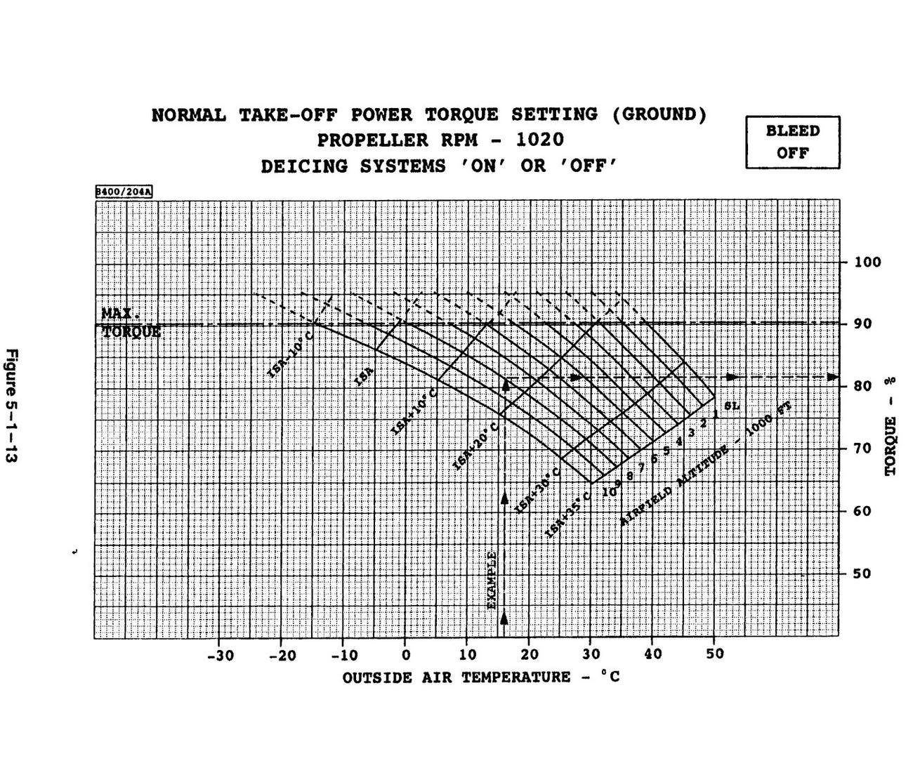
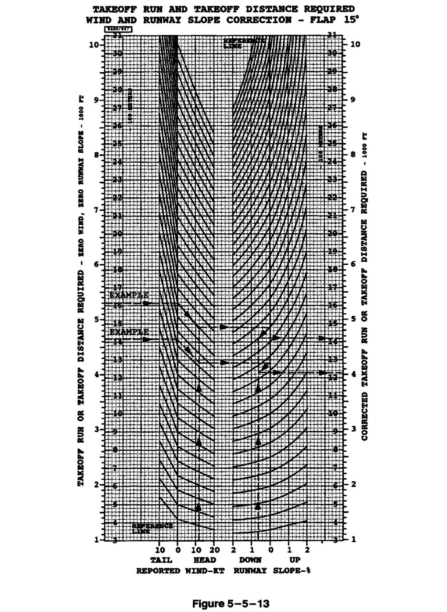
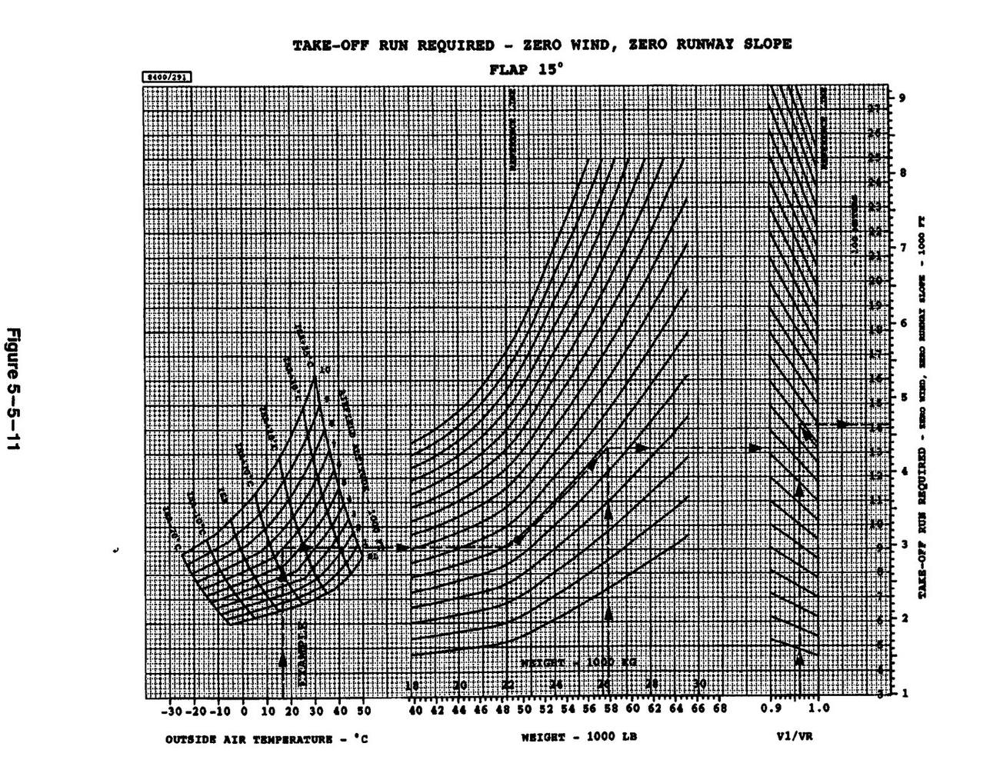
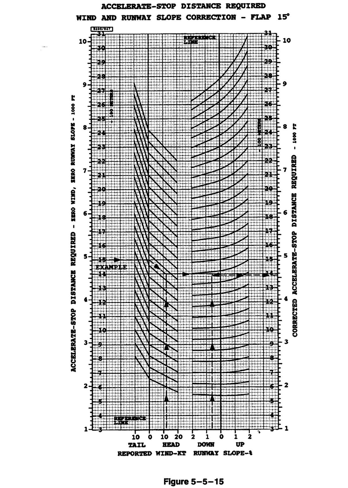
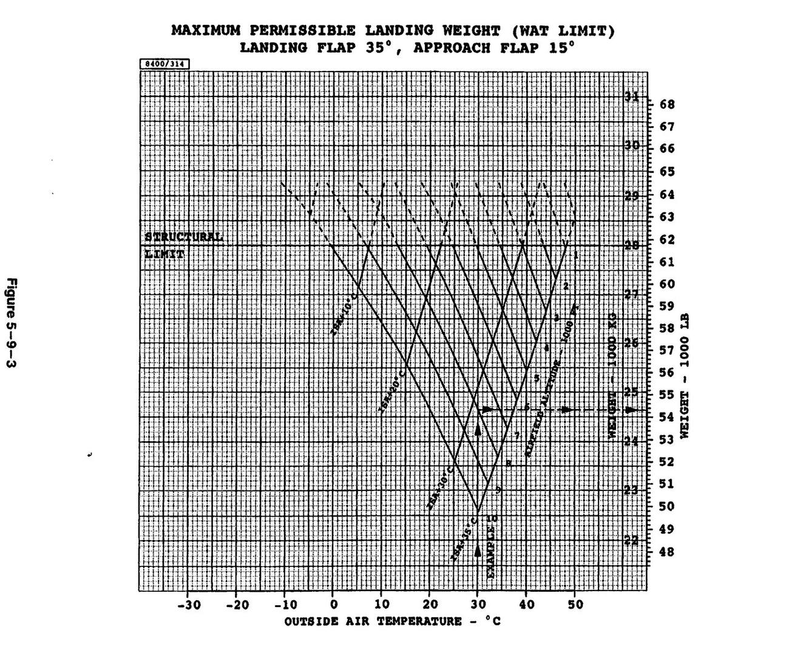
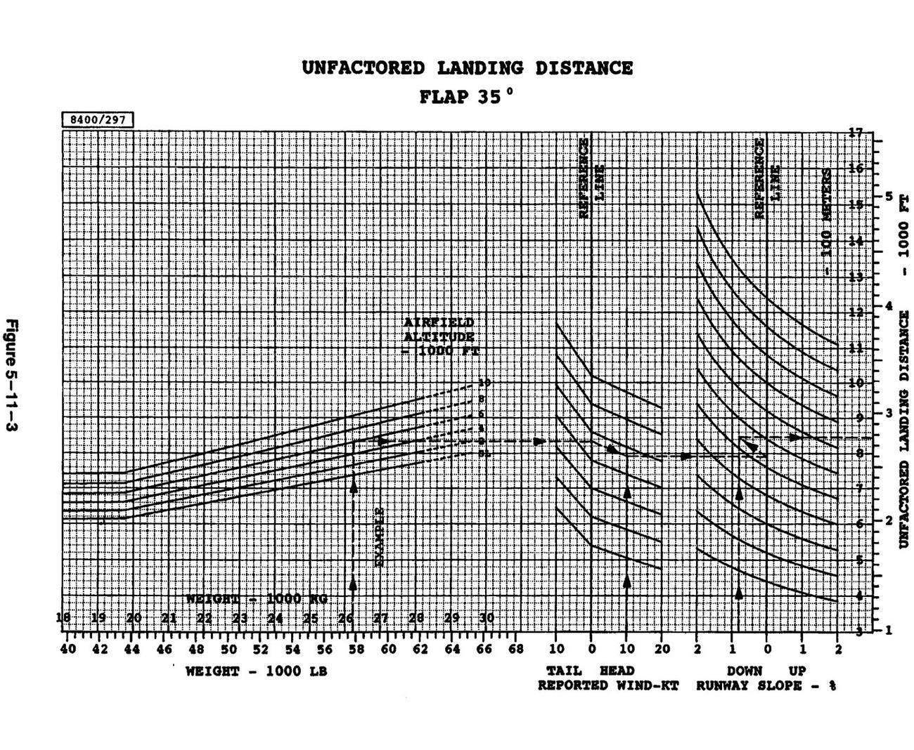
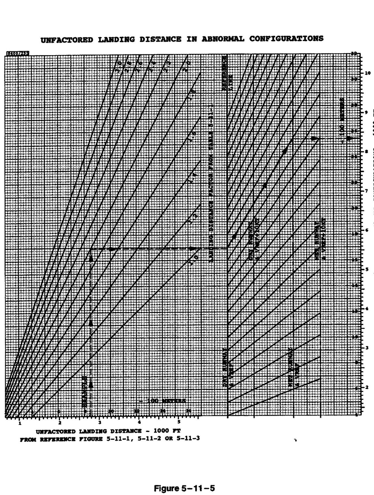

Dash 8-Q400 performance with the AFM charts: environmental factors, chart technique, WAT limit, take-off field lengths, V1 reductions, runway analysis, en-route and landing, abnormal landing factors.
8 lessons · 3 modules · about 1 hours
Training material only. It does not replace the Aircraft Flight Manual, FCOM, QRH, MEL or the Domestic Airlines Operations Manual, which always take precedence.
Lesson 01: Environmental Factors and Performance Definitions
Lesson 1 of 8 · about 9 min
Learning objectives
Explain how pressure altitude, temperature, wind, runway condition and slope affect performance.
Define the Q400 performance speeds.
Define the declared distances and the field length requirements.
Altitude, temperature, wind, runway and slope.
Five environmental factors
Pressure altitude — higher aerodromes: less dense air, less power and lift, longer distances.
Temperature — hot air is less dense. The PW150A is flat rated: torque is available up to a limiting temperature, then decreases.
Wind — headwind shortens, tailwind lengthens the ground distances. AFM charts use 50 % of the headwind and 150 % of the tailwind.
Runway condition — wet or contaminated surfaces degrade braking and may add drag.
Runway slope — uphill lengthens the take-off and shortens the stop; downhill the opposite.
Performance speeds
Speed
Meaning
V1
Take-off decision speed: the maximum speed for the first stopping action and the minimum speed to continue after an engine failure
VR
Rotation speed
V2
Take-off safety speed at 35 ft with one engine inoperative
VMCG
Minimum control speed on the ground (rudder only)
VMCA
Minimum control speed in the air (≤ 5° bank)
VMCL
Minimum control speed in the landing configuration
VREF
Reference landing speed at 50 ft
Declared distances
TORA — take-off run available (runway).
ASDA — TORA + stopway.
TODA — TORA + clearway.
LDA — landing distance available; it begins at a displaced threshold when one exists.
Field requirements
For every take-off the aeroplane must meet three requirements: the take-off run required (TORR) ≤ TORA, the take-off distance required (TODR) ≤ TODA and the accelerate-stop distance required (ASDR) ≤ ASDA (CAT.POL.A.205). Each is the longer of the engine-failure case and 115 % of the all-engines case (for distance and run).
Key takeaways
Altitude and temperature reduce density: less power and lift, longer distances.
Charts use 50 % headwind and 150 % tailwind.
TORR ≤ TORA, TODR ≤ TODA, ASDR ≤ ASDA.
Knowledge check
ASDA equals:
TORA + clearway
TORA + stopway
LDA + stopway
TODA − TORA
Answer: B. Accelerate-stop distance available = runway + stopway.
Module 1 · Basics and Chart Technique
Lesson 02: Reading AFM Performance Charts
Lesson 2 of 8 · about 8 min
Learning objectives
Describe the layout of a carpet-type AFM chart.
Use reference lines and guide lines correctly.
Read the normal take-off power torque setting.
Reference line, guide lines, result.
How the charts are built
AFM Section 5 charts are "carpet" charts: several panels side by side, each adding one variable. A typical take-off chart starts with OAT and pressure altitude, then moves to weight, then to wind and slope corrections, and ends on the result scale.
Reference lines and guide lines
Enter the first panel with the first variable and move to the line of the second variable.
Move horizontally to the reference line of the next panel.
From the reference line, follow the guide lines (parallel to the nearest curve) until you reach the value of the new variable — then continue horizontally.
At the last panel, read the result on the scale. Use a sharp pencil and a straight edge: a few millimetres can mean hundreds of feet or pounds.
Watch the limits
Hatched or shaded areas, "structural limit" lines and "maximum" annotations are limits, not suggestions. Never extrapolate outside the chart.
Take-off power
The first step of every take-off computation is the normal take-off power torque for the OAT and pressure altitude (propeller 1020 rpm, bleeds and de-icing as indicated on the chart). Below a certain temperature the torque is constant (flat rated); above it, the torque decreases with temperature.

Normal take-off power torque setting (ground), propeller 1020 rpm, de-icing on or off, bleeds off: enter OAT, move to the pressure altitude, read the torque. Source: Dash 8-400 AFM, Section 5 (type-rating course material) — for training only, use the current AFM.
In the line
The company runway analysis and the EFB performance tool use the same AFM data. Learning the charts explains why the numbers change — and lets you catch an input error.
Key takeaways
Carpet charts add one variable per panel.
At each reference line follow the guide lines to the new value.
Always start with the take-off power torque for OAT and pressure altitude.
Knowledge check
At a reference line, how do you correct for the next variable?
Move vertically down
Follow the guide lines to the value, then continue horizontally
Read the result directly
Ignore the line
Answer: B. Guide lines carry the value from the reference line to the actual value of the variable.
Module 2 · Take-off and Climb
Lesson 03: Take-off Weight Limits — the WAT Limit
Lesson 3 of 8 · about 8 min
Learning objectives
List the factors that can limit the take-off weight.
Explain the WAT (weight–altitude–temperature) limit.
Read the maximum permissible take-off weight chart.
Is the aircraft WAT limited?
What can limit the take-off weight?
The structural maximum take-off weight.
The WAT limit — climb performance with one engine inoperative.
The field lengths: take-off run, take-off distance, accelerate-stop distance.
Obstacles in the take-off flight path (runway analysis).
Brake energy, the landing weight at destination (plus trip fuel), and MEL/CDL penalties.
The WAT limit
The WAT limit is the maximum permissible take-off weight for the aerodrome altitude and temperature that still gives the minimum climb gradients with one engine inoperative (second segment 2.4 %, final segment 1.2 % gross for a twin — CS 25.121). It does not depend on runway length: on a hot, high aerodrome the aeroplane can be WAT-limited on a very long runway.
Maximum permissible take-off weight (WAT limit), take-off flap 15°: enter OAT, move to the pressure altitude, read the weight — never above the structural limit. Source: Dash 8-400 AFM, Section 5 (type-rating course material) — for training only, use the current AFM.
Exercise approach
The type-rating exercise plans a departure from a short runway (Toronto City Centre, runway 08: elevation 251 ft, 4,000 ft, no clearway or stopway, slope −0.02 %). The questions to ask are always the same:
What sources do I need? — AFM / runway analysis, weather, NOTAMs, aerodrome chart.
What do I need about the airport? — elevation, runway length, slope, clearway, stopway, line-up allowance, obstacles.
What weather affects the calculation? — OAT, QNH (pressure altitude), wind (head/tail and crosswind components), runway condition.
What is the take-off torque? Is the aeroplane WAT-limited?
What weight do the TOR, TOD and ASD allow?
Key takeaways
The lowest of structural, WAT, field, obstacle, brake and landing limits applies.
The WAT limit protects the one-engine-inoperative climb gradients.
A long runway does not remove the WAT limit.
Knowledge check
What does the WAT limit protect?
The accelerate-stop distance
The minimum one-engine-inoperative climb gradients
The brake energy
The tyre speed
Answer: B. Weight–altitude–temperature limit: the heaviest weight that still meets the OEI climb gradients.
Module 2 · Take-off and Climb
Lesson 04: Take-off Field Lengths — TOR, TOD and ASD
Lesson 4 of 8 · about 10 min
Learning objectives
Correct the available distances for wind and slope.
Find the weight allowed by the take-off run, take-off distance and accelerate-stop distance.
Identify the limiting requirement.
TOR, TOD, ASD — the lowest weight wins.
Wind and slope correction
The field length charts are drawn for zero wind and zero slope. The first step converts the actual distance available into an equivalent zero-wind, zero-slope distance using the wind and slope correction charts.

Take-off run and take-off distance required — wind and runway slope correction, flap 15°. Source: Dash 8-400 AFM, Section 5 (type-rating course material) — for training only, use the current AFM.
Take-off run and take-off distance
With the corrected distance, the TOR and TOD charts give the maximum weight for the OAT and pressure altitude. In the exercise, the 4,000 ft runway corrected to about 3,200 ft: the take-off run allows about 56,200 lb and the take-off distance about 55,000 lb.

Take-off run required — zero wind, zero runway slope, flap 15°. Source: Dash 8-400 AFM, Section 5 (type-rating course material) — for training only, use the current AFM.Take-off distance required — zero wind, zero runway slope, flap 15°. Source: Dash 8-400 AFM, Section 5 (type-rating course material) — for training only, use the current AFM.
Accelerate-stop distance
The ASDA is corrected the same way (4,000 ft became about 3,300 ft), then the accelerate-stop chart gives the weight: about 49,000 lb.

Accelerate-stop distance required — wind and runway slope correction, flap 15°. Source: Dash 8-400 AFM, Section 5 (type-rating course material) — for training only, use the current AFM.Accelerate-stop distance required — zero wind, zero runway slope, flap 15°. Source: Dash 8-400 AFM, Section 5 (type-rating course material) — for training only, use the current AFM.
The limiting requirement
Requirement
Weight allowed (exercise)
Take-off run
56,200 lb
Take-off distance
55,000 lb
Accelerate-stop distance
49,000 lb — limiting
On a short runway without stopway, the accelerate-stop distance is often limiting. The next lesson shows how a V1 reduction (V1/VR split) recovers weight.
Training values
The figures above are a classroom exercise from the type-rating course. In operation use the company runway analysis or EFB tool with the actual conditions.
Key takeaways
Correct distances for wind and slope first.
Read the weight from the TOR, TOD and ASD charts; the lowest limits.
Short runway without stopway: often ASD-limited.
Knowledge check
In the exercise, which requirement limited the take-off weight?
Take-off run
Take-off distance
Accelerate-stop distance
WAT
Answer: C. The ASD allowed 49,000 lb, lower than the TOR (56,200 lb) and TOD (55,000 lb).
Module 2 · Take-off and Climb
Lesson 05: V1 Reductions and Take-off Speeds
Lesson 5 of 8 · about 8 min
Learning objectives
Explain how a V1/VR split changes TOR, TOD and ASD.
Use the V1/VR ratio in the AFM.
Read VR and V1 from the rotation speed chart.
V1 ≤ VR ≤ V2.
Splitting V1 and VR
When V1 is reduced below VR (V1/VR ratio below 1.0):
The accelerate-stop distance decreases — the stop starts at a lower speed.
The take-off distance increases — after an engine failure at the lower V1, the aeroplane accelerates longer on one engine to VR.
The take-off run also increases slightly.
When the take-off is ASD-limited and there is spare take-off distance, a V1 reduction moves the take-off towards balance and allows a higher weight.
Exercise result
At 49,000 lb with a reduced V1/VR ratio, the exercise gave a take-off run of about 2,800 ft, a take-off distance of about 3,100 ft and an accelerate-stop distance of about 2,800 ft — all within the corrected distances.
Rotation speed and V1
The rotation speed chart gives VR from OAT, pressure altitude and weight, then converts VR to V1 with the V1/VR ratio. In the exercise, VR was about 102 KIAS. The chart also shows the minimum VR (based on VMCA) and the minimum V1 (VMCG).
Rotation speed VR and conversion of VR and V1/VR ratio to V1, flap 15°: minimum VR and minimum V1 limits are marked. Source: Dash 8-400 AFM, Section 5 (type-rating course material) — for training only, use the current AFM.
Sanity check of the speeds
Always check: V1 ≤ VR ≤ V2. A set such as V1 120, VR 128, V2 138 is consistent; V1 above VR, or V2 below VR, is not.
Wet or contaminated runways
Use the AFM supplement data: V1 is reduced, the screen height is lower and the take-off weight may be restricted. Reduced take-off power is not used on contaminated runways.
Key takeaways
V1/VR split: ASD down, TOD and TOR up.
Use it when ASD-limited with spare TODA.
Always V1 ≤ VR ≤ V2; V1 ≥ VMCG.
Knowledge check
How does a V1/VR split affect the TOD and ASD?
Both decrease
TOD increases, ASD decreases
TOD decreases, ASD increases
No effect
Answer: B. A lower V1 means an earlier, shorter stop, but a longer one-engine acceleration to VR.
Module 2 · Take-off and Climb
Lesson 06: Climb Segments and Runway Analysis
Lesson 6 of 8 · about 9 min
Learning objectives
Describe the take-off climb segments of the Q400.
Read a runway analysis page and its limit codes.
Explain the engine failure procedure (special departure).
Read the limit code.
Climb segments
Segment
From – to
Configuration
Minimum gross gradient (twin)
1st
35 ft – gear retracted
Take-off flap, gear retracting, V2
Positive
2nd
Gear up – acceleration altitude (min 400 ft)
Take-off flap, V2, take-off power
2.4 %
3rd
Acceleration
Level acceleration, flap retraction
—
4th
Flaps retracted – 1,500 ft
Clean, maximum continuous power, final climb speed
1.2 %
The net flight path (gross − 0.8 %) must clear obstacles by 35 ft (CAT.POL.A.210). Obstacles are handled by the runway analysis.
Reading a runway analysis page
A runway analysis page is produced for one runway and one aeroplane / engine type (DHC-8-402, PW150A). It shows:
The aerodrome and runway, elevation, length, line-up shift, clearway, stopway and slope.
Any special engine-failure procedure: "climb at … via … reaching … or … turn …", the flap retraction height and any hold.
Conditions: flap, bleeds, anti-ice.
For each temperature and wind: the maximum weight, with a limit code (for example field, climb, obstacle, brake energy, structural) and the V-speeds.
Read the limit code
A "climb limit" (dry runway) code means more runway will not help; only a lower temperature, less weight, or a different flap setting will. A field-limit code means distance is the problem.
Engine failure procedures
If an obstacle is critical, the company publishes a special procedure for an engine failure after V1. Brief it before every take-off: the turn point or altitude, the track, the acceleration altitude and where to hold.
The runway analysis gives the maximum weight, the limit code and the special procedure.
Brief the engine failure procedure before every take-off.
Knowledge check
The runway analysis shows a climb limit. Will a longer runway increase the weight?
Yes
No — the limit is the climb gradient, not distance
Only with a tailwind
Only on a wet runway
Answer: B. A climb limit depends on altitude, temperature, configuration and weight, not on runway length.
Module 3 · En-route and Landing
Lesson 07: En-route Performance and Driftdown
Lesson 7 of 8 · about 7 min
Learning objectives
Describe the one-engine-inoperative en-route requirements.
Explain the driftdown speed and altitude.
Use the en-route data in the AOM/FCOM.
MCP and best L/D speed.
Engine failure in cruise
After an engine failure at cruise level the remaining engine at maximum continuous power cannot hold altitude: the aeroplane drifts down to the altitude where power equals drag.
Driftdown speed: the speed for the best lift-to-drag ratio — the shallowest descent and highest level-off altitude.
Driftdown altitude (ceiling): where level flight can be maintained with one engine at MCP.
Rules
CAT.POL.A.215: the net flight path (gross reduced by 1.1 % for a twin) must clear the terrain by 2,000 ft while descending and 1,000 ft in level flight, within 5 NM of the track (10 NM without the navigation accuracy), and allow a landing at a suitable aerodrome.
Cruise data
The AOM/FCOM gives tables for maximum cruise power, long-range cruise, maximum endurance and single-engine cruise at maximum continuous power, with torque, fuel flow and TAS for weight, altitude and ISA deviation. The Q200 course shows how these tables are read; the Q400 method is identical.
Icing
Ice protection on and ice accretion reduce the single-engine ceiling: use the icing performance data in mountainous areas.
Key takeaways
Engine failure in cruise: MCP, best L/D speed, drift down to the ceiling.
Net path = gross − 1.1 %; 2,000 ft / 1,000 ft clearance within 5 NM.
Icing lowers the single-engine ceiling.
Knowledge check
What speed gives the highest level-off altitude after an engine failure in cruise?
VMO
Best lift-to-drag (driftdown) speed
V2
VREF
Answer: B. The best L/D speed gives the shallowest descent and the highest driftdown ceiling.
Module 3 · En-route and Landing
Lesson 08: Landing Performance and Abnormal Landing Factors
Lesson 8 of 8 · about 10 min
Learning objectives
Find the landing WAT limit.
Compute the unfactored and factored landing field length.
Apply the abnormal landing distance factors (example: hydraulic system failure).
70 % of the LDA for a turboprop.
Landing WAT limit
The maximum permissible landing weight (WAT limit) ensures the approach climb gradient (one engine, approach flap: 2.1 %) and the landing climb gradient (all engines, landing flap: 3.2 %) for the aerodrome altitude and temperature.
Maximum permissible landing weight (WAT limit), landing flap 15°, approach flap 10°. Source: Dash 8-400 AFM, Section 5 (type-rating course material) — for training only, use the current AFM.

Maximum permissible landing weight (WAT limit), landing flap 35°, approach flap 15°. Source: Dash 8-400 AFM, Section 5 (type-rating course material) — for training only, use the current AFM.
Unfactored landing distance, flap 15°: weight, airfield altitude, wind and slope — about 2,600 ft in the example. Source: Dash 8-400 AFM, Section 5 (type-rating course material) — for training only, use the current AFM.
From unfactored to factored distance
The unfactored distance is what a test pilot achieves. The operating rules require the aeroplane to stop within a fraction of the LDA. For turboprops, CAT.POL.A.230 requires a full stop within 70 % of the LDA (factor 1/0.7 ≈ 1.43); with the 60 % rule the factor is 1.67. On a wet runway the result is increased by a further 15 %.
Landing field length required: the unfactored distance multiplied by the operational landing field length factor. Source: Dash 8-400 AFM, Section 5 (type-rating course material) — for training only, use the current AFM.
Flap
Unfactored
× 1.43 (70 % rule)
× 1.67 (60 % rule)
15°
2,600 ft
3,718 ft
4,342 ft
35°
2,300 ft
3,289 ft
3,841 ft

Unfactored landing distance, flap 35°: about 2,300 ft in the same example. Source: Dash 8-400 AFM, Section 5 (type-rating course material) — for training only, use the current AFM.
Abnormal landing factors
For a failure that affects landing (for example a hydraulic system failure, QRH), the unfactored landing distance in abnormal configurations is the normal unfactored distance multiplied by the abnormal landing distance factor, with further increases for a wet runway and/or a higher approach speed (VREF + 10).

Unfactored landing distance in abnormal configurations: in the example, about 6,100 ft for a wet runway AND VREF + 10. Source: Dash 8-400 AFM, Section 5 (type-rating course material) — for training only, use the current AFM.
In flight
Before the approach, compare the abnormal landing distance with the LDA (CAT.OP.MPA.300). If it does not fit, divert to a longer runway.
Review
TORA is the runway length declared available for the take-off run.
The WAT limit is the maximum weight for altitude and temperature.
A V1/VR split increases the TOD and reduces the ASD.
Crosswind and tailwind limits are in the AFM and OM B (tailwind 10 kt unless approved otherwise).
Turboprop dispatch: stop within 70 % of LDA (factor 1.43); wet +15 %.
Abnormal configurations: apply the AFM/QRH factors and check against the LDA before the approach.
Knowledge check
For a turboprop, a full stop must be achieved within what part of the LDA (dry, dispatch)?
50 %
60 %
70 %
85 %
Answer: C. CAT.POL.A.230(a)(2): turbo-propeller aeroplanes — 70 % of the LDA.
Training material only. It does not replace the Aircraft Flight Manual, FCOM, QRH, MEL or the Domestic Airlines Operations Manual, which always take precedence.